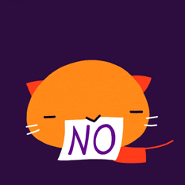
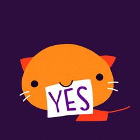

Hey you !
| ENQUIRING, DISCUSSING, COMMITTING ONESELF... FOR SUSTAINABLE SOCIETIES. This project aims at encouraging dialogue between young Europeans, reinforcing their knowledge and commitment on the issues of sustainable development. It gives continuity to the international process launched by the Brasilan Ministry of Education in 2009, which culminated with the international conference Let’s take Care of the Planet in June 2010 in Brasilia, gathering youth from 47 countries who jointly wrote the "Let’s Take Care of the Planet" Youth International Charter, a reference document for the whole process. Since then, youngsters in about 15 European countries work on their project on the local level, present and discuss them in Conferences where they also produce educommunication tools. |
|  |  |
|---|